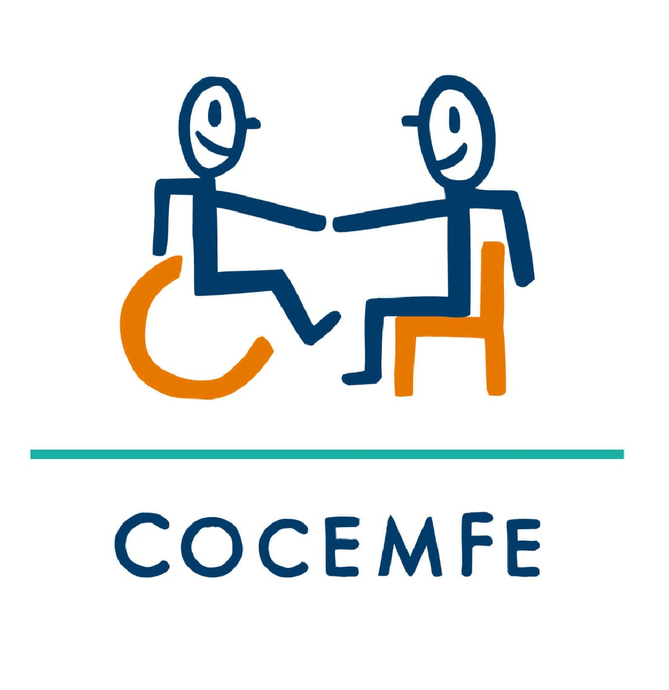
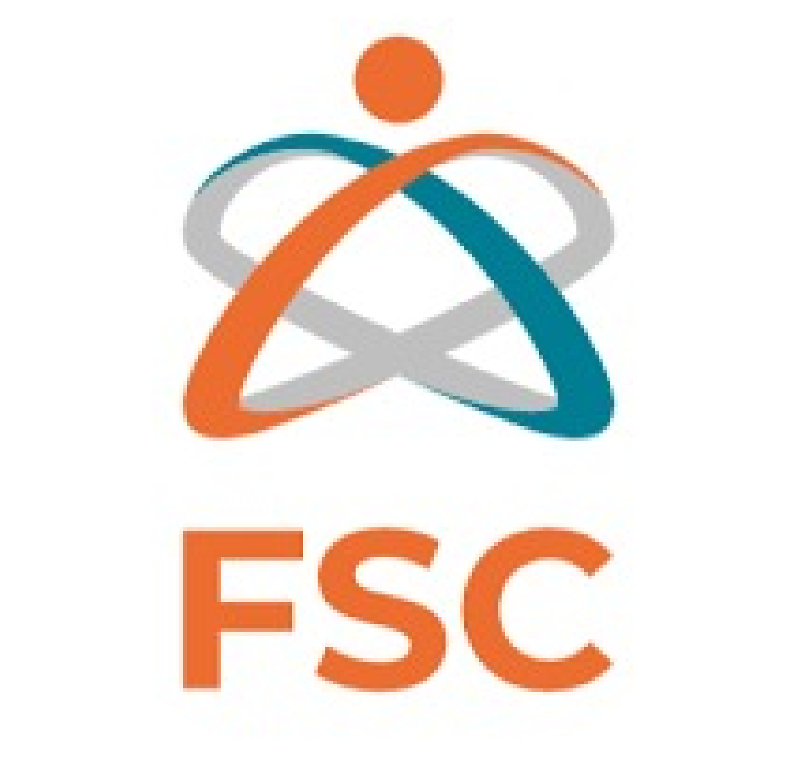

Notificaciones

"Una ciudad para todos sin excepción, que reconoce y respeta a las personas...

Te invitamos a participar este lunes 22 de abril en el taller sobre . . .
¿Cómo ha contribuido la lengua de señas colombiana al acercamiento de la . . .
La FILBo2024 comenzó con momentos emocionantes durante su jornada de . .
Vive con nosotros esta emocionante travesía de dos semanas repletas de . . .
Este jueves 25 de abril marca el inicio de la programación inclusiva en la . . .
La Fundación Santo Domingo y Corpoeducación iniciaron la . . .
Descripción de la notificación